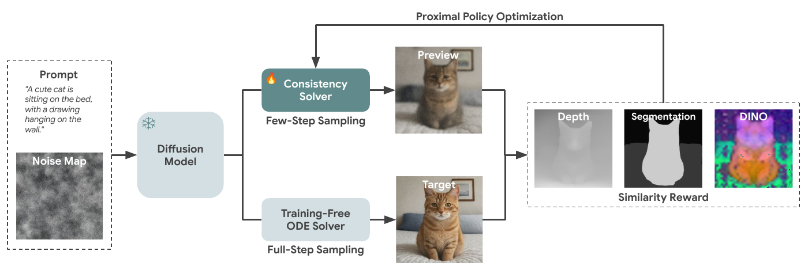
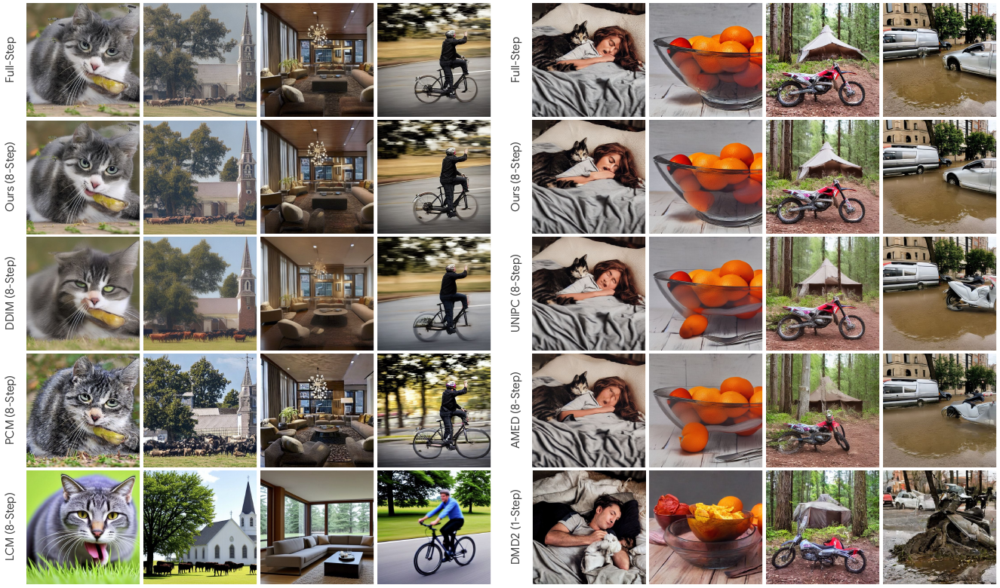
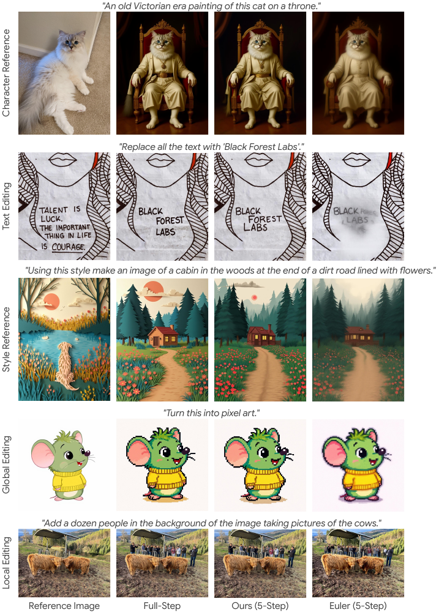

Image Diffusion Preview with Consistency Solver
CVPR 2026 (Highlight)
Fu-Yun Wang1,2, Hao Zhou1, Liangzhe Yuan1, Sanghyun Woo1, Boqing Gong1, Bohyung Han1,3, Ming-Hsuan Yang1, Han Zhang1, Yukun Zhu1, Ting Liu1, Long Zhao1
1Google DeepMind 2The Chinese University of Hong Kong 3Seoul National University
The slow inference process of image diffusion models significantly degrades interactive user experiences. ConsistencySolver introduces a preview-and-refine paradigm: users first get fast low-step previews, then only run expensive full-step sampling on satisfactory ones.
ConsistencySolver is a lightweight, learnable high-order ODE solver derived from general linear multistep methods, optimized via Reinforcement Learning (PPO). It achieves FID scores on-par with Multistep DPM-Solver using 47% fewer steps, while reducing overall user interaction time by nearly 50%.
Previews closely resemble final outputs in visual and structural quality, enabling informed user decisions.
Minimizes computational overhead for rapid iteration, letting users explore multiple variations quickly.
Preserves deterministic PF-ODE mapping so refining a satisfactory preview always produces an aligned final result.
ConsistencySolver is derived from classical Linear Multistep Methods (LMMs), adapted to the simplified PF-ODE. The update rule at each step is:
where \(\mathbf{y}_t = \mathbf{x}_t / \alpha_t\) is the signal-normalized state, \(n_t = \sigma_t / \alpha_t\) is the noise-to-signal ratio, and \(\boldsymbol{\epsilon}_{i+1-j}\) are cached noise predictions. The adaptive coefficients \(w_j(t_i, t_{i+1})\) are generated by a lightweight MLP policy, trained via PPO to maximize preview-target similarity.
This framework unifies existing solvers as special cases: DDIM (\(m{=}1, w_1{=}1\)), PNDM (4-step Adams-Bashforth with fixed coefficients), and DPM-Solver-2 (alternating 1- and 2-step updates). ConsistencySolver replaces these fixed coefficients with learned ones, optimized end-to-end.
For a detailed mathematical derivation, see our companion theory blog.



| Method | Steps | FID ↓ | CLIP ↑ | Seg. ↑ | Dep. ↑ | Inc. ↑ | Img. ↑ | DINO ↑ |
|---|---|---|---|---|---|---|---|---|
| Training-Free ODE Solvers | ||||||||
| DDIM | 5 | 52.59 | 87.8 | 41.9 | 14.2 | 74.1 | 16.4 | 73.2 |
| Multistep DPM | 5 | 25.87 | 93.1 | 66.6 | 19.1 | 85.6 | 20.6 | 85.5 |
| Multistep DPM | 8 | 19.53 | 95.9 | 76.3 | 21.8 | 90.8 | 23.2 | 90.6 |
| Multistep DPM | 10 | 19.29 | 97.0 | 80.5 | 24.1 | 93.1 | 25.1 | 93.0 |
| Distillation-Based Methods | ||||||||
| DMD2 | 1 | 19.88 | 89.3 | 42.1 | 12.6 | 70.5 | 12.1 | 73.8 |
| Rectified Diff. | 4 | 20.64 | 94.4 | 67.6 | 18.5 | 87.0 | 19.7 | 85.6 |
| Distillation-Based Solvers | ||||||||
| AMED | 8 | 19.22 | 94.9 | 72.4 | 20.0 | 88.3 | 20.5 | 88.8 |
| Ours-Distill | 8 | 19.65 | 95.1 | 74.0 | 20.8 | 89.3 | 21.1 | 89.5 |
| Proposed Method | ||||||||
| ConsistencySolver | 5 | 20.39 | 94.2 | 69.4 | 19.3 | 87.1 | 20.8 | 86.5 |
| ConsistencySolver | 8 | 18.82 | 96.4 | 78.5 | 22.2 | 91.6 | 23.4 | 91.2 |
| ConsistencySolver | 10 | 18.66 | 97.2 | 83.2 | 24.9 | 93.9 | 25.3 | 93.5 |
| ConsistencySolver | 12 | 18.53 | 97.9 | 85.6 | 26.7 | 95.1 | 26.7 | 95.0 |
| Method | Steps | E. R. ↑ | E. S. ↑ | DINO ↑ | Inc. ↑ | CLIP ↑ | Dep. ↑ |
|---|---|---|---|---|---|---|---|
| Euler | 4 | 0.61 | 5.45 | 91.31 | 86.75 | 93.95 | 23.99 |
| Euler | 5 | 0.79 | 5.80 | 93.09 | 89.16 | 95.25 | 24.76 |
| Multistep DPM | 4 | 0.72 | 5.57 | 91.83 | 88.12 | 94.49 | 23.70 |
| Multistep DPM | 5 | 0.83 | 5.92 | 93.44 | 90.17 | 95.53 | 24.59 |
| ConsistencySolver | 4 | 0.73 | 5.67 | 92.39 | 88.71 | 94.86 | 24.27 |
| ConsistencySolver | 5 | 0.86 | 6.02 | 93.90 | 90.76 | 95.87 | 25.18 |
ConsistencySolver trained on SD1.5 generalizes zero-shot to unseen models without retraining.
| Model | Steps | Method | FID ↓ | CLIP ↑ |
|---|---|---|---|---|
| SDXL | 10 | Multistep DPM | 26.32 | 32.52 |
| SDXL | 10 | ConsistencySolver | 23.32 | 33.45 |
| SD1.4 | 5 | Multistep DPM | 25.22 | 29.94 |
| SD1.4 | 5 | ConsistencySolver | 20.22 | 30.16 |
Diffusion Preview reduces end-to-end inference time by up to 55% while maintaining generation quality.
| Evaluator | GenEval | COCO 2017 | LAION | Speedup | |||
|---|---|---|---|---|---|---|---|
| Full | Preview | Full | Preview | Full | Preview | ||
| Claude Sonnet 4 | 2.88s | 1.74s | 3.64s | 1.85s | 6.35s | 2.87s | 1.88x |
| Human | 3.82s | 2.16s | 3.52s | 2.03s | 5.18s | 2.58s | 1.85x |
If you find our work useful, please consider citing:
@inproceedings{wang2025consolver,
title={Image Diffusion Preview with Consistency Solver},
author={Wang, Fu-Yun and Zhou, Hao and Yuan, Liangzhe and Woo, Sanghyun and Gong, Boqing and Han, Bohyung and Yang, Ming-Hsuan and Zhang, Han and Zhu, Yukun and Liu, Ting and Zhao, Long},
booktitle={CVPR},
year={2026}
}We thank Hartwig Adam and Florian Schroff from Google DeepMind for their support of this project, and Prof. Hongsheng Li from CUHK for his valuable advice.